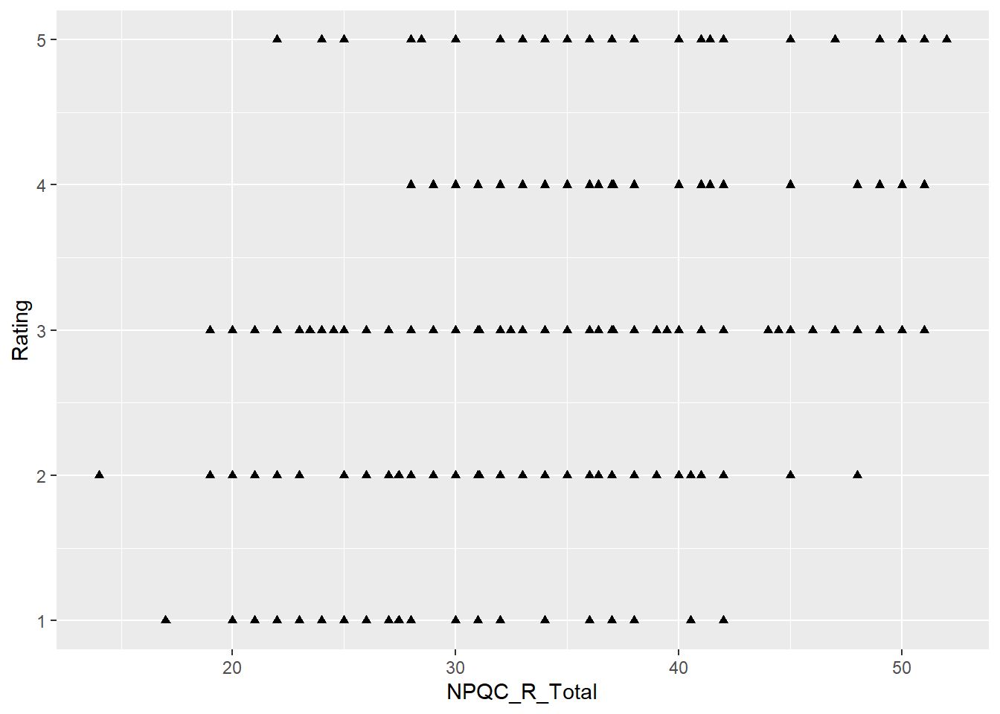
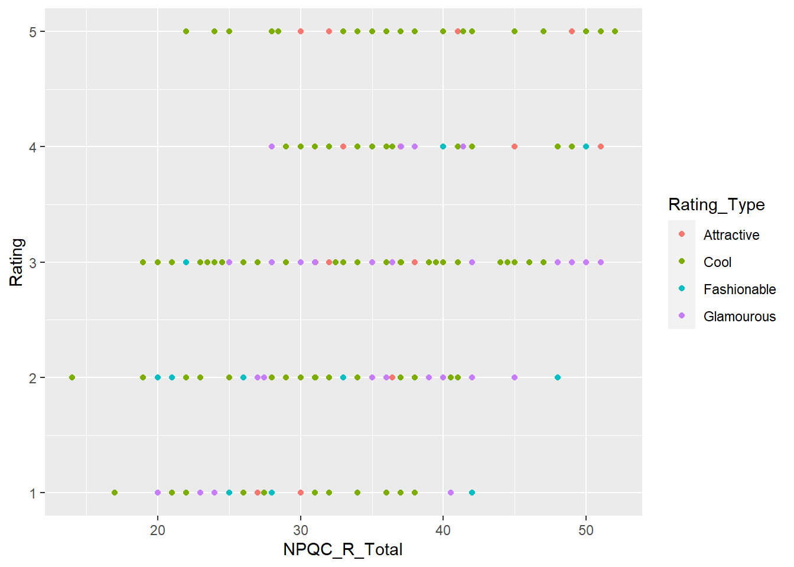
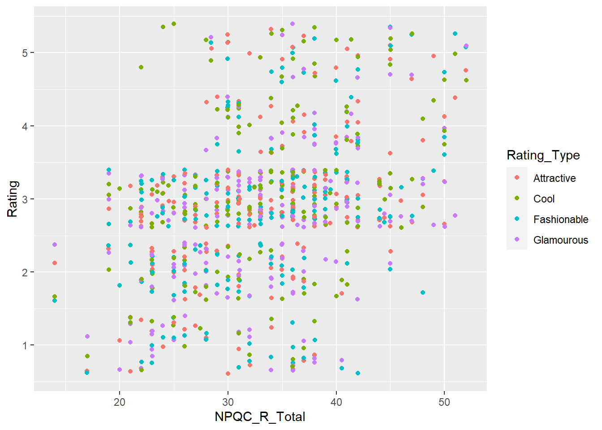
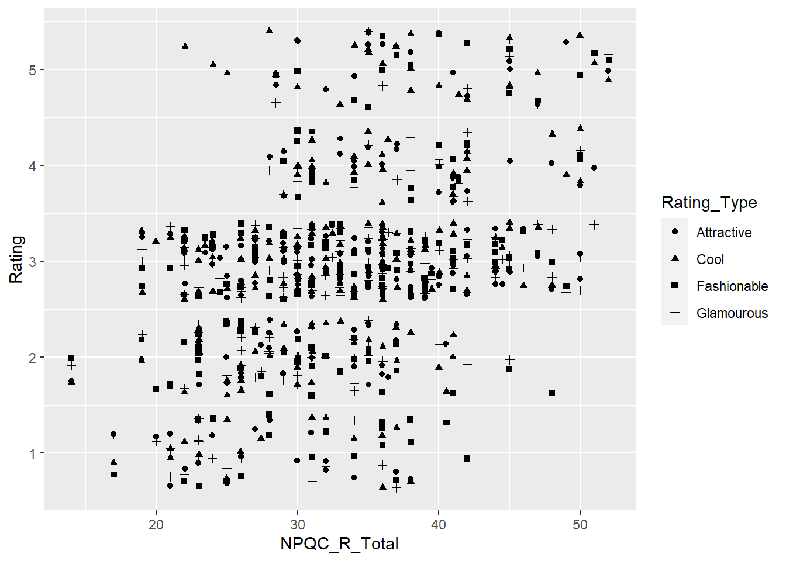
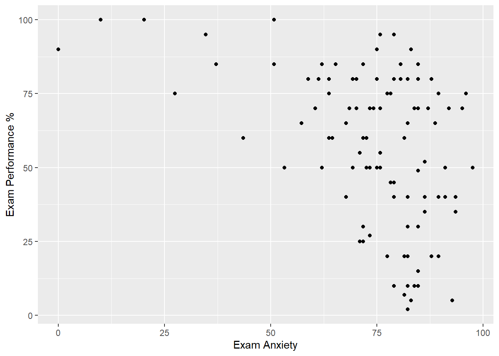
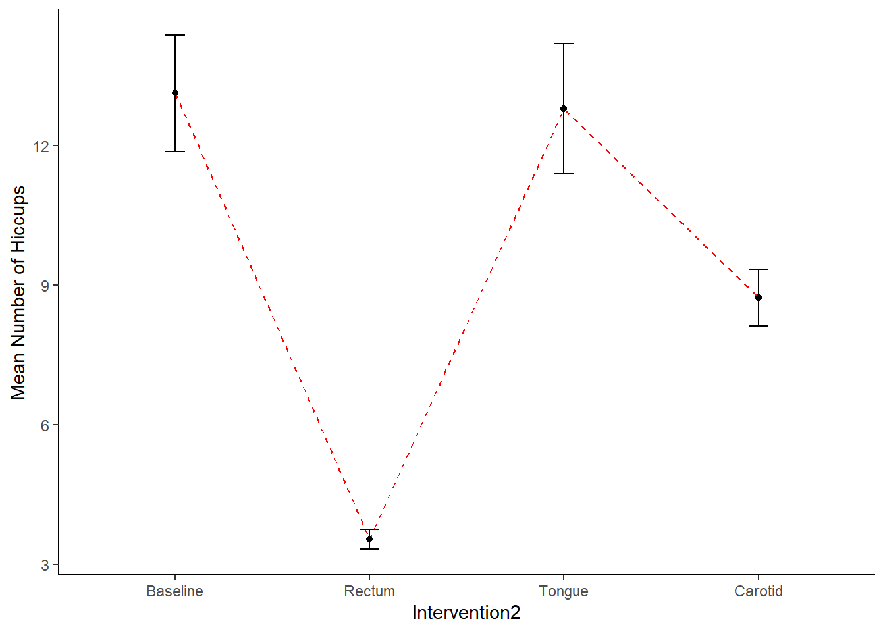

Estadística 101
Capítulo 2
Contenido: 8 videos
Parte 1
Parte 2
Parte 3
Parte 4
Parte 5
Parte 6
Parte 7
Parte 8
# JLUF modified 31/07/2020
# directly inspired from Field (2012) "Discovering Statistics Using R"
setwd("../data")
#setwd("C:/Users/Usuario/Documents/JoseLuis/UTalca_2018/Stats_UTalca/database_2020_DocPsychol")
# install.packages(c("ggplot2", "plyr"))
library(ggplot2)
library(reshape)
library(plyr)##
## Attaching package: 'plyr'## The following objects are masked from 'package:reshape':
##
## rename, round_anylibrary(Rmisc)## Loading required package: lattice#---1. dot graphs-----
# get data
facebookData <- read.delim("FacebookNarcissism.dat", header = TRUE) # load data
head(facebookData)## id NPQC_R_Total Rating_Type Rating
## 1 1 31 Attractive 2
## 2 1 31 Fashionable 2
## 3 1 31 Glamourous 2
## 4 1 31 Cool 2
## 5 2 37 Attractive 2
## 6 2 37 Fashionable 2str(facebookData)## 'data.frame': 776 obs. of 4 variables:
## $ id : int 1 1 1 1 2 2 2 2 5 5 ...
## $ NPQC_R_Total: num 31 31 31 31 37 ...
## $ Rating_Type : chr "Attractive" "Fashionable" "Glamourous" "Cool" ...
## $ Rating : int 2 2 2 2 2 2 2 2 3 3 ...# id: a number indicating the identity of the participant.
# NPQC_R_Total: the total score on the narcissism questionnaire.
# Rating_Type: whether the rating was for coolness, ...
# ... glamour, fashion or attractiveness.
# Rating: the rating given (on a scale from 1 to 5).
# fig 1 - NPQC_R_Total in the x-axis, Rating in the y-axis
graph <- ggplot(facebookData, aes(NPQC_R_Total, Rating))
graph + geom_point() + labs(title = "plot 1")
# fig 2
graph + geom_point(shape = 17) # will change the dots to triangles
# fig 3
graph + geom_point(size = 6)
# Differentiate different ratings by plotting them in different colours
# fig 4 - to differentiate distinct ratings
graph + geom_point(aes(colour = Rating_Type))
# We potentially have a problem of overplotting
# because there were a limited number of responses that people could give
# To avoid this overplotting we use the "position" option to add a jitter:
# fig 5
graph + geom_point(aes(colour = Rating_Type), position = "jitter")
# fig 6
graph + geom_point(aes(shape = Rating_Type), position = "jitter")
#---2. scatterplot-----
# A scatterplot is a graph that plots
# each person score on one variable against their score on another
# Example: a psychologist was interested in the effects of exam stress on exam performance
# A questionnaire was devised and validated to assess state anxiety relating to exams (called the Exam Anxiety Questionnaire, or EAQ)
# This scale produced a measure of anxiety scored out of 100
# Anxiety was measured before an exam, and the % mark of each student on the exam was used to assess the exam performance
# get data
examData <- read.delim("ExamAnxiety.dat", header = TRUE)
head(examData)## Code Revise Exam Anxiety Gender
## 1 1 4 40 86.298 Male
## 2 2 11 65 88.716 Female
## 3 3 27 80 70.178 Male
## 4 4 53 80 61.312 Male
## 5 5 4 40 89.522 Male
## 6 6 22 70 60.506 Femalestr(examData)## 'data.frame': 103 obs. of 5 variables:
## $ Code : int 1 2 3 4 5 6 7 8 9 10 ...
## $ Revise : int 4 11 27 53 4 22 16 21 25 18 ...
## $ Exam : int 40 65 80 80 40 70 20 55 50 40 ...
## $ Anxiety: num 86.3 88.7 70.2 61.3 89.5 ...
## $ Gender : chr "Male" "Female" "Male" "Male" ...# There are 5 variables:
# Code: a number that indicates the identity of the participant
# Revise: the total hours spent revising
# Exam: mark on the exam as a percentage
# Anxiety: the score on the EAQ
# Gender: male or female
# Plot relationship between exam anxiety (Anxiety) and exam performance (Exam)
# fig 1
scatter <- ggplot(examData, aes(Anxiety, Exam))
scatter +
geom_point() +
labs(x = "Exam Anxiety", y = "Exam Performance %")
# fig 2 - scatter plot are often accompanied of a line that summarize the relationship between the variables
# the shaded line is the 95% CI
scatter +
geom_point() +
geom_smooth() +
labs(x = "Exam Anxiety", y = "Exam Performance %")## `geom_smooth()` using method = 'loess' and formula 'y ~ x'
# fig 3 - we often use a straight line
scatter +
geom_point() +
# geom_smooth(method = "lm") +
geom_smooth(method = "lm", colour = "Red") +
labs(x = "Exam Anxiety", y = "Exam Performance %")## `geom_smooth()` using formula 'y ~ x'
# fig 4 - we can switch off the CI
scatter +
geom_point() +
geom_smooth(method = "lm", colour = "Green", se = FALSE) +
labs(x = "Exam Anxiety", y = "Exam Performance %")## `geom_smooth()` using formula 'y ~ x'
# fig 5 - we can change the transparency and the color of the line
scatter +
geom_point() +
geom_smooth(method = "lm", alpha = 0.1, fill = "Blue") +
labs(x = "Exam Anxiety", y = "Exam Performance %")## `geom_smooth()` using formula 'y ~ x'
# fig 6
scatter +
geom_point() +
geom_smooth(method = "lm", colour = "Red", alpha = 0.1, fill = "Blue") +
labs(x = "Exam Anxiety", y = "Exam Performance %")## `geom_smooth()` using formula 'y ~ x'
#---3. grouped scatterplot-----
# What if we want to see
# whether male and female students had different reactions to exam anxiety?
# we need to set "Gender" as an aesthetic
# fig 1
scatter <- ggplot(examData, aes(Anxiety, Exam, colour = Gender))
scatter +
geom_point() +
geom_smooth(method = "lm")## `geom_smooth()` using formula 'y ~ x'
# fig 2 - better to see the lines according to the gender
scatter +
geom_point() +
geom_smooth(method = "lm", alpha = 0.1, aes(fill = Gender)) +
labs(x = "Exam Anxiety", y = "Exam Performance %", colour = "Gender")## `geom_smooth()` using formula 'y ~ x'
#---4. histograms-----
# A biologist was worried about the potential health effects of music festivals.
# So, one year she went to the Download Music Festival and measured the hygiene of 810 concert-goers over the three days of the festival
# Since it was difficult to track people down there were some missing data on days 2 and 3
# Hygiene was measured using a standardized technique that results in a score ranging between 0 (you smell like a corpse that has been left to rot up a skunk's arse) and 4 (you smell of sweet roses on a fresh spring day)
# get data
festivalData <- read.delim("DownloadFestival.dat", header = TRUE)
head(festivalData)## ticknumb gender day1 day2 day3
## 1 2111 Male 2.64 1.35 1.61
## 2 2229 Female 0.97 1.41 0.29
## 3 2338 Male 0.84 NA NA
## 4 2384 Female 3.03 NA NA
## 5 2401 Female 0.88 0.08 NA
## 6 2405 Male 0.85 NA NA# fig 1
festivalHistogram <- ggplot(festivalData, aes(day1))
festivalHistogram + geom_histogram()## `stat_bin()` using `bins = 30`. Pick better value with `binwidth`.
# fig 2
festivalHistogram +
geom_histogram(binwidth = 0.4) +
labs(x = "Hygiene (Day 1 of Festival)", y = "Frequency")
festivalDataAlt <- read.delim("DownloadFestival_NoOutlier.dat", header = TRUE)
# fig 2b
festivalHistogramAlt <- ggplot(festivalDataAlt, aes(day1))
festivalHistogramAlt +
geom_histogram(binwidth = 0.6) +
labs(x = "Hygiene (Day 1 of Festival)", y = "Frequency")
#---5. boxplots-----
# fig 1 - let's check also the gender
festivalBoxplot <- ggplot(festivalData, aes(gender, day1))
festivalBoxplot +
geom_boxplot() +
labs(x = "Gender", y = "Hygiene (Day 1 of Festival)")
# An outlier is an extreme score, so the easiest way to find it is to sort the data:
festivalData <- festivalData[order(festivalData$day1),]
tail(festivalData)## ticknumb gender day1 day2 day3
## 774 4564 Female 3.38 3.44 3.41
## 300 3371 Female 3.41 NA NA
## 657 4264 Male 3.44 NA NA
## 303 3374 Male 3.58 3.35 NA
## 574 4016 Female 3.69 NA NA
## 611 4158 Female 20.02 2.44 NA# get the other data
festivalData2 <- read.delim("DownloadFestival_NoOutlier.dat", header = TRUE)
# fig 2
festivalBoxplot2 <- ggplot(festivalData2, aes(gender, day1))
festivalBoxplot2 +
geom_boxplot() +
labs(x = "Gender", y = "Hygiene (Day 1 of Festival)")
# Or We can do it by hand
festivalData$day1[810] <- 2.02
# fig 3
festivalBoxplot <- ggplot(festivalData, aes(gender, day1))
festivalBoxplot +
geom_boxplot() +
labs(x = "Gender", y = "Hygiene (Day 1 of Festival)")
# fig 4 - day 2
festivalBoxplot <- ggplot(festivalData, aes(gender, day2))
festivalBoxplot + geom_boxplot() + labs(x = "Gender", y = "Hygiene (Day 2 of Festival)")## Warning: Removed 546 rows containing non-finite values (stat_boxplot).
# fig 5 - day 3
festivalBoxplot <- ggplot(festivalData, aes(gender, day3))
festivalBoxplot + geom_boxplot() + labs(x = "Gender", y = "Hygiene (Day 3 of Festival)")## Warning: Removed 687 rows containing non-finite values (stat_boxplot).
#---6. bar charts-----
# Imagine that a film company director was interested in whether
# there was really such a thing as a chick flick
# (a film that typically appeals to women more than men).
# He took 20 men and 20 women and showed half of each sample a film
# that was supposed to be a chick flick (Bridget Jones's Diary),
# and the other half of each sample a film that didn't fall
# into the category of chick flick (Memento, a brilliant film by the way).
# In all cases he measured their physiological arousal
# as an indicator of how much they enjoyed the film.
# get data
chickFlick <- read.csv("chick_flick.csv", header = TRUE)
head(chickFlick)## genero pelicula estado.de.alerta
## 1 Hombre Bridget Jones' Diary 22
## 2 Hombre Bridget Jones' Diary 13
## 3 Hombre Bridget Jones' Diary 16
## 4 Hombre Bridget Jones' Diary 10
## 5 Hombre Bridget Jones' Diary 18
## 6 Hombre Bridget Jones' Diary 24str(chickFlick)## 'data.frame': 40 obs. of 3 variables:
## $ genero : chr "Hombre" "Hombre" "Hombre" "Hombre" ...
## $ pelicula : chr "Bridget Jones' Diary" "Bridget Jones' Diary" "Bridget Jones' Diary" "Bridget Jones' Diary" ...
## $ estado.de.alerta: int 22 13 16 10 18 24 13 14 19 23 ...colnames(chickFlick) <- c("gender", "film", "arousal")
# Note there are 3 variables:
# gender: specifies the gender of the participant as text.
# film: specifies the film watched as text.
# arousal: is their arousal score.
#---
# bar <- ggplot(chickFlick, aes(film, arousal))
#---
# The stat_summary() function takes the following general form:
# stat_summary(function = x, geom = y)
# Functions can be specified either for individual points (fun.y)
# or for the data as a whole (fun.data)
# and are set to be common statistical functions such as "mean", "median" ...
# add
#---
# bar + stat_summary(fun.y = mean, geom = "bar", fill = "White", colour = "Black")
#---
# "fun.y = mean" computes the mean for us,
# "geom = bar" displays these values as bars,
# "fill = "White" makes the bars white (the default is dark grey),
# and "colour = Black" makes the outline of the bars black.
# If we want to add error bars to create an error bar chart,
# we can again add these as a layer using stat_summary():
# add
#---
# bar + stat_summary(fun.data = mean_cl_normal, geom = "pointrange")
#---
# This command adds a standard 95% confidence interval
# in the form of the pointrange geom
# all together
# fig 1
bar <- ggplot(chickFlick, aes(film, arousal))
bar +
stat_summary(fun.y = mean, geom = "bar", fill = "White", colour = "Black") +
stat_summary(fun.data = mean_cl_normal, geom = "pointrange") +
# stat_summary(fun.data = mean_se, geom = "pointrange") +
labs(x = "Film", y = "Mean Arousal")## Warning: `fun.y` is deprecated. Use `fun` instead.## Warning: Computation failed in `stat_summary()`:
## The `Hmisc` package is required.# fig 1b with ggplot, type 2,
# we use summarySE to compute the SE
datac <- summarySE(chickFlick, measurevar="arousal", groupvars = c("film"))
# we use a variable to set the space
dodge <- position_dodge(width = 0.9)
# the figure!
ggplot(datac, aes(x=film, y=arousal)) +
geom_bar(position = dodge, stat="identity",
color="black", fill="green", show.legend=FALSE) +
geom_errorbar(position=position_dodge(.9), width=.25,
aes(ymin=arousal, ymax=arousal+se)) +
theme(panel.grid.major = element_blank(), panel.grid.minor = element_blank(),
panel.background = element_blank(), axis.line = element_line(colour = "black")) +
scale_y_continuous(limits = c(0,30), breaks = seq(0, 30, 5)) +
ylab("Arousal")# If we want to factor in gender we could do this in several ways.
# First we could set an aesthetic (such as colour) to represent the different genders,
# but we could also use faceting to create separate plots for men and women.
# We could also do both.
# fig 2
bar <- ggplot(chickFlick, aes(film, arousal, fill = gender))
bar +
stat_summary(fun.y = mean, geom = "bar", position="dodge") +
stat_summary(fun.data = mean_cl_normal,
geom = "errorbar",
position = position_dodge(width=0.9),
width = 0.2) +
labs(x = "Film", y = "Mean Arousal", fill = "Gender")## Warning: `fun.y` is deprecated. Use `fun` instead.
## Warning: Computation failed in `stat_summary()`:
## The `Hmisc` package is required.
# Or maybe is better to switch the layers
bar +
stat_summary(fun.data = mean_cl_normal,
geom = "errorbar",
position = position_dodge(width = 0.90),
width = 0.2) +
stat_summary(fun.y = mean,
geom = "bar", position="dodge") +
labs(x = "Film", y = "Mean Arousal", fill = "Gender")## Warning: `fun.y` is deprecated. Use `fun` instead.
## Warning: Computation failed in `stat_summary()`:
## The `Hmisc` package is required.# And if we want to get ride of the title of the legend
bar +
stat_summary(fun.data = mean_cl_normal,
geom = "errorbar",
position = position_dodge(width = 0.90),
width = 0.2) +
stat_summary(fun.y = mean,
geom = "bar", position="dodge") +
labs(x = "Film", y = "Mean Arousal", fill = "") +
labs(title = "fig 2")## Warning: `fun.y` is deprecated. Use `fun` instead.
## Warning: Computation failed in `stat_summary()`:
## The `Hmisc` package is required.# The second way to express gender
# fig 3
bar <- ggplot(chickFlick, aes(film, arousal, fill = film))
# bar <- ggplot(chickFlick, aes(film, arousal))
bar +
stat_summary(fun.data = mean_cl_normal, geom = "errorbar", width = 0.2) +
stat_summary(fun.y = mean, geom = "bar") +
facet_wrap( ~ gender) +
labs(x = "Film", y = "Mean Arousal") +
theme(legend.position = "none")## Warning: `fun.y` is deprecated. Use `fun` instead.
## Warning: Computation failed in `stat_summary()`:
## The `Hmisc` package is required.
## Warning: Computation failed in `stat_summary()`:
## The `Hmisc` package is required.# fig 3b with ggplot, type 2,
# we use summarySE to compute the SE
datac <- summarySE(chickFlick, measurevar="arousal", groupvars = c("film", "gender"))
# we use a variable to set the space
dodge <- position_dodge(width = 0.9)
# the figure!
ggplot(datac, aes(x=film, y=arousal, fill=gender)) +
geom_bar(position = dodge, stat="identity",
color="black") +
geom_errorbar(position=position_dodge(.9), width=.25,
aes(ymin=arousal, ymax=arousal+se)) +
scale_fill_manual(values=c("white", "black")) +
theme(panel.grid.major = element_blank(), panel.grid.minor = element_blank(),
panel.background = element_blank(), axis.line = element_line(colour = "black")) +
scale_y_continuous(limits = c(0,30), breaks = seq(0, 30, 5)) +
ylab("Arousal")
#---7. line graphs-----
# People have many methods for stopping hiccups (a surprise, holding your breath),
# but actually medical science has put its collective mind to the task too.
# The official treatment methods include tongue-pulling manoeuvres,
# massage of the carotid artery, and,
# believe it or not, digital rectal massage (Fesmire, 1988).
# We took 15 hiccup sufferers, and during a bout of hiccups
# administered each of the three procedures
# (in random order and at intervals of 5 minutes) after
# taking a baseline of how many hiccups they had per minute.
# We counted the number of hiccups in the minute after each procedure.
# get data
hiccupsData <- read.csv("hipo.csv", header = TRUE)
head(hiccupsData)## ID Linea.base Susto Azucar Bolsa
## 1 1 15 9 7 2
## 2 2 13 18 7 4
## 3 3 9 17 5 4
## 4 4 7 15 10 5
## 5 5 11 18 7 4
## 6 6 14 8 10 3str(hiccupsData)## 'data.frame': 15 obs. of 5 variables:
## $ ID : int 1 2 3 4 5 6 7 8 9 10 ...
## $ Linea.base: int 15 13 9 7 11 14 20 9 17 19 ...
## $ Susto : int 9 18 17 15 18 8 3 16 10 10 ...
## $ Azucar : int 7 7 5 10 7 10 7 12 9 8 ...
## $ Bolsa : int 2 4 4 5 4 3 3 3 4 4 ...# missing something!
hiccupsData$ID <- NULL
colnames(hiccupsData) <- c("Baseline", "Tongue", "Carotid", "Rectum")
# Note there are 4 variables:
# Baseline: specifies the number of hiccups at baseline.
# Tongue: specifies the number of hiccups after tongue pulling.
# Carotid: specifies the number of hiccups after carotid artery massage.
# Rectum: specifies the number of hiccups after digital rectal massage.
# Each row in the data file represents a different person,
# so these data are laid out as a repeated-measures design,
# with each column representing a different treatment condition
# and every person undergoing each treatment.
# These data are in the wrong format for ggplot2 to use.
# We can rearrange the data as follows:
hiccups <- stack(hiccupsData)
head(hiccups)## values ind
## 1 15 Baseline
## 2 13 Baseline
## 3 9 Baseline
## 4 7 Baseline
## 5 11 Baseline
## 6 14 Baselinestr(hiccups)## 'data.frame': 60 obs. of 2 variables:
## $ values: int 15 13 9 7 11 14 20 9 17 19 ...
## $ ind : Factor w/ 4 levels "Baseline","Tongue",..: 1 1 1 1 1 1 1 1 1 1 ...colnames(hiccups) <- c("Hiccups","Intervention")
head(hiccups)## Hiccups Intervention
## 1 15 Baseline
## 2 13 Baseline
## 3 9 Baseline
## 4 7 Baseline
## 5 11 Baseline
## 6 14 Baselinestr(hiccups)## 'data.frame': 60 obs. of 2 variables:
## $ Hiccups : int 15 13 9 7 11 14 20 9 17 19 ...
## $ Intervention: Factor w/ 4 levels "Baseline","Tongue",..: 1 1 1 1 1 1 1 1 1 1 ...# To plot a categorical variable in ggplot() it needs to be recognized as a factor,
# What we could do, however, is set a new order for the factors,
hiccups$Intervention2 <- factor(hiccups$Intervention,
levels(hiccups$Intervention)[c(1, 4, 2, 3)])
# fig 1
line <- ggplot(hiccups, aes(Intervention, Hiccups))
# line2 <- ggplot(hiccups, aes(Intervention2, Hiccups))
# To make the line display we also need to set an aesthetic of group = 1;
# this is because we are joining summary points (points that summarize a group)
# rather than individual data points.
line +
stat_summary(fun.y = mean, geom = "point") +
stat_summary(fun.y = mean, geom = "line", aes(group = 1),
colour = "Blue", linetype = "dashed") +
stat_summary(fun.data = mean_cl_boot, geom = "errorbar", width = 0.2) +
labs(x = "Intervention", y = "Mean Number of Hiccups")## Warning: `fun.y` is deprecated. Use `fun` instead.## Warning: `fun.y` is deprecated. Use `fun` instead.## Warning: Computation failed in `stat_summary()`:
## The `Hmisc` package is required.# We can check what happen if we change the order of the conditions
line2 <- ggplot(hiccups, aes(Intervention2, Hiccups))
line2 +
stat_summary(fun.y = mean, geom = "point") +
stat_summary(fun.y = mean, geom = "line", aes(group=1), colour = "Red", linetype = "dashed") +
stat_summary(fun.data = mean_cl_boot, geom = "errorbar", width = 0.2) +
labs(x = "Intervention", y = "Mean Number of Hiccups")## Warning: `fun.y` is deprecated. Use `fun` instead.## Warning: `fun.y` is deprecated. Use `fun` instead.## Warning: Computation failed in `stat_summary()`:
## The `Hmisc` package is required.# fig with ggplot, type 2,
# we use summarySE to compute the SE
datac <- summarySE(hiccups, measurevar="Hiccups", groupvars="Intervention2")
# the figure!
ggplot(datac, aes(x=Intervention2, y=Hiccups, group=1)) +
geom_errorbar(width=.1, aes(ymin=Hiccups-se, ymax=Hiccups+se)) +
geom_line(colour = "Red", linetype = "dashed") +
geom_point() +
ylab("Mean Number of Hiccups") +
#coord_cartesian(ylim = c(830, 900)) +
theme(panel.grid.major = element_blank(), panel.grid.minor = element_blank(),
panel.background = element_blank(), axis.line = element_line(colour = "black"))
#---7b. line graphs-----
# Imagine we conducted an experiment in which a group of 25 children
# was encouraged to send text messages on their mobile phones over a six-month period.
# A second group of 25 children was forbidden from sending text messages for the same period.
# The outcome was a score on a grammatical test (as a percentage)
# that was measured both before and after the intervention.
# The first independent variable was, therefore,
# text message use (text messagers versus controls) and
# the second independent variable was the time
# at which grammatical ability was assessed (baseline or after 6 months).
textData <- read.csv("usuarios_de_whatsapp.csv", header = TRUE)
head(textData)## Grupo Linea.base X6.meses
## 1 Usarios de Whatsapp 52 32
## 2 Usarios de Whatsapp 68 48
## 3 Usarios de Whatsapp 85 62
## 4 Usarios de Whatsapp 47 16
## 5 Usarios de Whatsapp 73 63
## 6 Usarios de Whatsapp 57 53str(textData)## 'data.frame': 50 obs. of 3 variables:
## $ Grupo : chr "Usarios de Whatsapp" "Usarios de Whatsapp" "Usarios de Whatsapp" "Usarios de Whatsapp" ...
## $ Linea.base: int 52 68 85 47 73 57 63 50 66 60 ...
## $ X6.meses : int 32 48 62 16 63 53 59 58 59 57 ...# missing something!
colnames(textData) <- c("Group", "Baseline", "Six_months")
# There are 3 variables:
# Group: specifies whether they were in the text message group or the control group.
# Baseline: grammar scores at baseline.
# Six_months: grammar scores after 6 months.
# Each row in the data file represents a different person.
# These data are again in the wrong format for ggplot2.
# Instead of the current wide format,
# we need the data in long (i.e., molten) format.
# So we need to restructure the data to a new dataframe
# called textMessages that is in long format.
textMessages <- melt(textData,
id = c("Group"),
measured = c("Baseline", "Six_months"))
head(textMessages)## Group variable value
## 1 Usarios de Whatsapp Baseline 52
## 2 Usarios de Whatsapp Baseline 68
## 3 Usarios de Whatsapp Baseline 85
## 4 Usarios de Whatsapp Baseline 47
## 5 Usarios de Whatsapp Baseline 73
## 6 Usarios de Whatsapp Baseline 57tail(textMessages)## Group variable value
## 95 Controles Six_months 78
## 96 Controles Six_months 62
## 97 Controles Six_months 71
## 98 Controles Six_months 55
## 99 Controles Six_months 46
## 100 Controles Six_months 79str(textMessages)## 'data.frame': 100 obs. of 3 variables:
## $ Group : chr "Usarios de Whatsapp" "Usarios de Whatsapp" "Usarios de Whatsapp" "Usarios de Whatsapp" ...
## $ variable: Factor w/ 2 levels "Baseline","Six_months": 1 1 1 1 1 1 1 1 1 1 ...
## $ value : int 52 68 85 47 73 57 63 50 66 60 ...colnames(textMessages)[c(2,3)] <- c("Time", "Grammar_Score")
# We might want to rename the labels from "Six months" to "6 Months",
textMessages$Time <- factor(textMessages$Time, labels = c("Baseline", "6 Months"))
# This format will have the following variables:
# Group: specifies whether they were in the text message group or the control group.
# Time: specifies whether the score relates to baseline or 6 months.
# Grammar_Score: the grammar scores.
# fig 2
line <- ggplot(textMessages, aes(Time, Grammar_Score, colour = Group))
pd <- position_dodge(0.1) # move them .05 to the left and right
line +
stat_summary(fun.y = mean, geom = "point", position = pd) +
stat_summary(fun.y = mean, geom = "line", aes(group = Group), position = pd) +
stat_summary(fun.data = mean_se, geom = "errorbar", width = 0.2, position = pd) +
labs(x = "Time", y = "Mean Grammar Score", colour = "Group") +
coord_cartesian(ylim = c(45, 70))## Warning: `fun.y` is deprecated. Use `fun` instead.## Warning: `fun.y` is deprecated. Use `fun` instead.# fig with ggplot, type 2,
# we use summarySE to compute the SE
datac <- summarySE(textMessages, measurevar="Grammar_Score", groupvars=c("Group", "Time"))
# the figure!
pd <- position_dodge(0.1) # dodge
ggplot(datac, aes(x=Time, y=Grammar_Score, colour=Group)) +
geom_errorbar(aes(ymin=Grammar_Score-se, ymax=Grammar_Score+se), width=.1, position=pd) +
geom_line(position=pd, aes(group=Group), show.legend=FALSE) +
geom_point(position=pd, aes(group=Group), show.legend=FALSE) +
theme(panel.grid.major = element_blank(), panel.grid.minor = element_blank(),
panel.background = element_blank(), axis.line = element_line(colour = "black")) +
ylab("Mean Grammar Score") +
scale_colour_manual(values=c("red", "blue")) +
coord_cartesian(ylim = c(45, 70))
# END